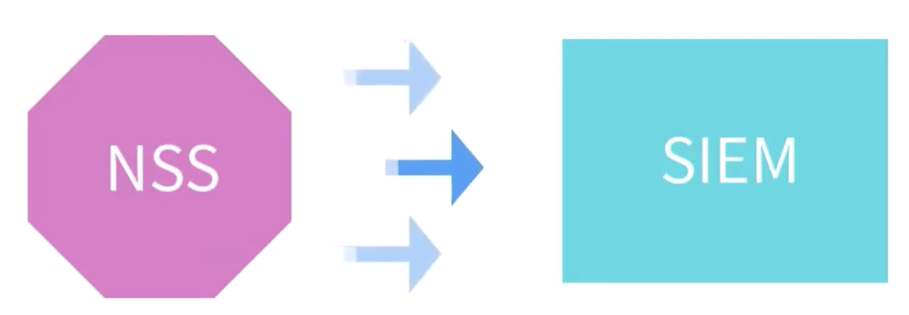
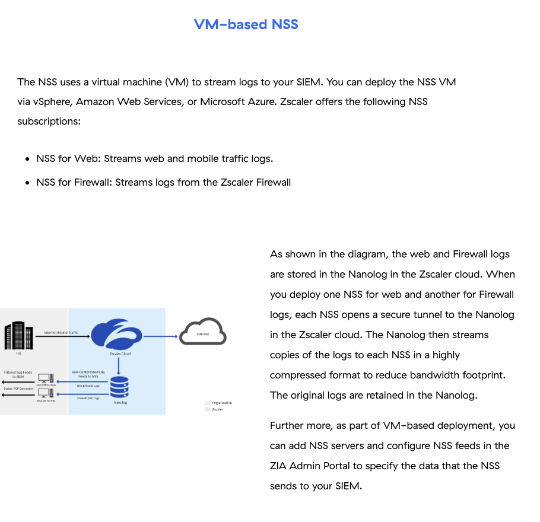
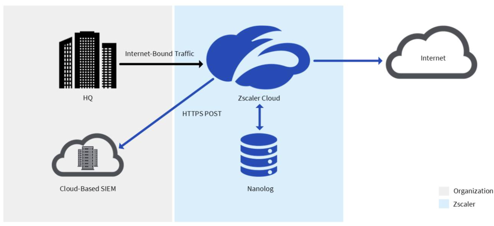
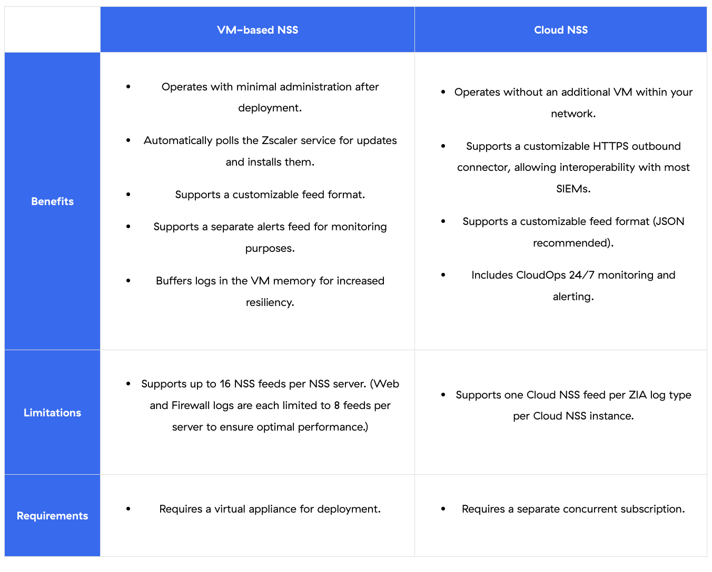
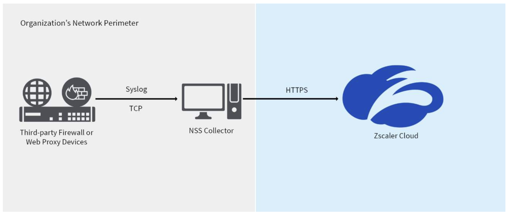

How Zscaler streams ZIA logs to your SIEM — and how to troubleshoot when they stop arriving
"If logs never reach the SIEM, the analytics, alerting, and forensics that depend on them are blind — NSS is the bridge that keeps that data flowing."
💭THINK FIRST · WHY NSS EXISTS
ZIA already stores every transaction in the Nanolog inside the Zscaler cloud. So why does an organisation need to stream a copy out to their SIEM at all — couldn't analysts just log into the ZIA portal?
What does the SIEM give you that the ZIA portal cannot — and why is real-time streaming, not nightly export, the right answer?
Logs are streamed in a "highly compressed" tokenised format. What problem is Zscaler solving by compressing on the wire, and what does NSS have to do before SIEMs can use the data?
Q1 — MODEL ANSWER
A SIEM correlates Zscaler events with logs from firewalls, EDR, identity, and email — that cross-source view is where most real attacks are discovered. Nightly export is too slow for alerting, and a SOC analyst can't pivot from a Splunk detection into the ZIA portal in real time. NSS exists so the SIEM sees ZIA events within seconds and can fire correlation rules against them.
Q2 — MODEL ANSWER
ZIA transactions are huge in number, so Zscaler tokenises and compresses them on the Nanolog to reduce egress bandwidth out of its cloud. The NSS VM (or Cloud NSS service) is the piece that decompresses and detokenises that stream, applies the configured feed filter, and then re-formats the logs in JSON / CEF / LEEF / Splunk-friendly key-value pairs so the SIEM can actually parse them.
SECTION 1
What NSS is and why it exists
Nanolog Streaming Service (NSS) is the family of products that lets the Zscaler cloud communicate with third-party security tools — most commonly a SIEM — by forwarding ZIA event logs out of the Zscaler Nanolog. NSS enables three customer outcomes: real-time alerting, cross-device log correlation, and long-term local archival of your traffic data.
NSS FOR WEB
Web & mobile traffic logs
Streams ZIA web-proxy transaction logs (URLs, user, action, threat verdict) and mobile traffic.
NSS FOR FIREWALL
Zscaler Firewall logs
Streams Cloud Firewall session logs (5-tuple, action, rule). Separate NSS instance per log type.
NSS COLLECTOR
Third-party log ingest
Reverse direction — pulls syslog/TCP logs from your firewalls and web proxies into Zscaler for Shadow IT discovery.
Two delivery mechanisms
NSS comes in two flavours that solve the same problem differently:
VM-based NSS — a virtual appliance you deploy in your data centre (vSphere) or cloud (AWS EC2, Azure VM). The VM opens a secure tunnel to the Nanolog and streams logs to your SIEM over raw TCP / syslog. Up to 16 feeds per server (8 Web + 8 Firewall).
Cloud NSS — Zscaler-hosted; no VM in your network. Logs are pushed directly from the Zscaler cloud to your SIEM's HTTPS POST endpoint (e.g. Splunk HEC, Azure Sentinel API). Requires a separate concurrent subscription. One feed per ZIA log type per instance.

NSS sits between the Nanolog and your SIEM — it decompresses, detokenises, filters, and formats every log before forwarding.
What an NSS instance actually does to each log
1
RECEIVE
Pull compressed, tokenised logs from the Nanolog
Each NSS opens a secure tunnel; the Nanolog streams copies in a highly compressed format to keep bandwidth low. Originals are retained on the Nanolog, so the NSS can ask for replay if it disconnects.
2
PROCESS
Decompress, detokenise, filter
NSS decompresses the stream, swaps tokens back to readable values, and drops anything that fails the configured NSS Feed filter (e.g. exclude internal traffic).
3
FORMAT
Reformat to SIEM-friendly output
Feed format is fully customisable — JSON, CEF, LEEF, key-value, or a Splunk-friendly layout. Zscaler recommends JSON for Cloud NSS.
4
STREAM
Deliver to SIEM
VM-NSS sends over raw TCP / syslog to the SIEM's listener; Cloud NSS POSTs over HTTPS to the SIEM's API ingestion endpoint (e.g. Splunk HEC).
NSS supports integration with all the major SIEMs — IBM QRadar, Microsoft Azure Sentinel, Splunk, and any other SIEM that can ingest TCP / syslog or accept HTTPS POST.
🧠
MENTAL NOTE
NSS = the on-ramp from Nanolog → SIEM. Three uses: real-time alerting, correlation, archival. Two flavours: VM-NSS (your network, raw TCP, 16 feeds/server max — 8 Web + 8 FW) and Cloud NSS (Zscaler-hosted, HTTPS POST, 1 feed per ZIA log type). NSS always decompresses + detokenises + filters + reformats before sending.
ASK A QUESTION
ADD A NOTE
💭THINK FIRST · WHY DEPLOY A VM IN 2026?
A VM-based NSS still requires VMware ESXi, AWS EC2, or Azure — infrastructure the customer has to size, patch, and monitor. Cloud NSS removes that work entirely. So why do most enterprises still pick VM-based?
Beyond "we already have a SIEM that takes syslog," what concrete benefits does a customer get from VM-NSS that Cloud NSS can't match?
Q1 — MODEL ANSWER
VM-NSS supports many more feeds per instance (up to 16, vs one feed per log type for Cloud NSS), which matters when an organisation needs separate per-business-unit feeds or many filtered slices of the same log type. It also lets you send to on-prem SIEMs that don't expose an HTTPS API, and it buffers logs in VM memory for resiliency against transient network hiccups between the NSS and the SIEM. Cloud NSS wins on operational simplicity; VM-NSS wins on feed flexibility and compatibility with legacy SIEM listeners.
SECTION 2
VM-based NSS
The VM-based NSS uses a virtual machine inside your network to stream logs to your SIEM over a raw TCP connection. The VM can be deployed via vSphere (ESX/ESXi), AWS EC2, or Microsoft Azure. Each NSS opens a secure tunnel back to the Nanolog in the Zscaler cloud.

Web and Firewall logs are stored in the Nanolog inside the Zscaler cloud. Deploying separate NSS VMs (NSS for Web / NSS for FW) opens parallel secure tunnels — each receives the raw compressed feed and forwards filtered logs over syslog/TCP to the SIEM.
Buffering and resilience — why this matters
NSS buffers logs in VM memory rather than on disk, which increases delivery resiliency against transient network issues between the SIEM and NSS. The buffer size increases proportionally to RAM allocated to the NSS VM — under-provisioning RAM directly shrinks the resiliency window. Memory required for buffering is already factored into Zscaler's recommended VM spec for your traffic volume.
NSS Server vs NSS Feed
NSS Server — the VM appliance instance (one per log type per cluster). One server can host up to 16 feeds total. Web and Firewall logs are each capped at 8 feeds per server for optimal performance.
NSS Feed — a filtered, formatted output. You choose the SIEM destination, the filter (e.g. "only blocked transactions"), and the output format. A single server can fan out many feeds to many SIEMs.
i
BEFORE YOU DEPLOY
Before adding an NSS Server in the ZIA Admin Portal (Administration → Nanolog Streaming Service), refer to the NSS Deployment guide for the platform you're using (vSphere, AWS, Azure) — the platform-specific OVA/AMI and pre-sizing checklist live there. Entering accurate traffic and user information lets the Zscaler service compute the correct VM resources.
🧠
MENTAL NOTE
VM-NSS limits: 16 feeds per server, 8 feeds per log type for performance. Platforms: vSphere · AWS · Azure. Buffer = RAM-backed, sized by Zscaler's VM-spec recommendation. Configure in ZIA Admin Portal → Administration → Nanolog Streaming Service (NSS Servers tab → Add NSS Server; NSS Feeds tab → Add Feed).
ASK A QUESTION
ADD A NOTE
💭THINK FIRST · CLOUD-TO-CLOUD STREAMING
Cloud NSS replaces the VM with a Zscaler-hosted HTTPS API feed pushed straight to your SIEM. There's no appliance, no patching, no buffer to size — but Zscaler caps you at one feed per ZIA log type per instance. Why that limit, and what does it cost you?
Cloud NSS supports a "stateless log ingestion API" and "POSTs batches" — what does stateless let Zscaler do at SIEM scale that a stateful TCP tunnel from a VM cannot?
If you need to split the same Firewall log into three feeds (one for the SOC, one for compliance, one to archive), can Cloud NSS do it? What's the workaround?
Q1 — MODEL ANSWER
A stateless ingestion API means any Zscaler cloud node can POST any batch to the SIEM — there's no sticky session that ties a customer's stream to a single VM. That makes the service horizontally scalable: traffic spikes are absorbed by spreading POSTs across many cloud workers. A stateful TCP tunnel from one VM would be a single throughput choke point.
Q2 — MODEL ANSWER
Cloud NSS gives you one feed per ZIA log type per instance, so you can't natively fan out three Firewall feeds from a single Cloud NSS subscription. Workarounds: purchase multiple Cloud NSS instances, or have the SIEM do the routing after ingest (Splunk index → multiple sourcetypes; Sentinel workspace → multiple workbooks). Otherwise, customers that need many filtered slices typically stay on VM-NSS.
SECTION 3
Cloud NSS
Cloud NSS is an optional subscription that enables direct cloud-to-cloud log streaming for all ZIA log types into a compatible cloud-based SIEM — without any on-premises connectors. It's offered for both Web and Firewall logs.
Instead of deploying, managing, and monitoring NSS VMs, you configure an HTTPS API feed to push logs from the Zscaler cloud into an HTTPS API-based log collector on the SIEM. As a result, you focus on meaningful log analysis (detection, hunting, investigation, alerting) rather than VM administration.

Cloud NSS — no customer VM. Logs go from the Nanolog straight to your cloud-based SIEM over HTTPS POST. The Zscaler cloud handles batching, retry, and TLS.
How it works under the hood
Cloud NSS supports a customisable HTTPS outbound connector for interoperability with most private and public cloud-based SIEMs that support a stateless log ingestion API.
It POSTs batches of logs (e.g. Splunk HTTP Event Collector / HEC) so a publicly-routable SIEM endpoint can ingest them. HTTPS is the more reliable and preferred approach for log delivery over the internet.
You can customise the feed format — JSON is Zscaler-recommended.
Includes Zscaler CloudOps 24/7 monitoring and alerting on the feed itself.
VM-based NSS vs Cloud NSS — the exam table

The benefits, limitations, and requirements table you should know cold. VM-NSS buffers in VM memory, supports 16 feeds, polls Zscaler for updates and auto-installs them. Cloud NSS has no VM, supports JSON-recommended feeds, has CloudOps 24/7 monitoring, but caps at one feed per ZIA log type per instance.
🧠
MENTAL NOTE
Cloud NSS = HTTPS POST · 1 feed per ZIA log type per instance · JSON recommended · CloudOps 24/7. VM-NSS = TCP/syslog · 16 feeds per server (8 Web + 8 FW) · RAM buffer · customer admin. Pick Cloud NSS when SIEM has an HTTPS ingest API and you don't need many feeds; pick VM-NSS for legacy SIEMs, many feeds, or strict on-prem requirements.
Analogy
VM-NSS is like running your own post office on company property — you sort the mail, you decide how many counters to staff, you keep packages in a back room when the delivery truck is late. Cloud NSS is like contracting a courier service: the Zscaler cloud picks up the mail directly from the Nanolog and drops it on your SIEM's loading dock over HTTPS — no building, no staff, no back room, but the courier only delivers one bag per address per contract.
📷 A1.png — add this image to the folder
Two-panel cartoon infographic, side by side. Left panel labelled "VM-NSS — On-prem Post Office": a small post office building inside a fenced corporate yard with mail sorters at multiple counters labelled "Web Feed", "Firewall Feed" and stacked bags in a back room labelled "RAM Buffer"; a truck waits at the dock labelled "Syslog/TCP → SIEM". Right panel labelled "Cloud NSS — Courier Service": no building; a friendly courier on a delivery bike with a single bag labelled "HTTPS POST" pulls directly from a Zscaler cloud icon and drops it at a loading dock labelled "SIEM HEC"; small note: "1 bag per log-type per contract". Both scenes drawn in clean modern cartoon style, soft colours, minimal text labels only where needed, educational infographic feel, modern tech-analogy aesthetic
ASK A QUESTION
ADD A NOTE
💭THINK FIRST · WHAT HAPPENS IF NSS GOES DOWN?
If the link between the Nanolog and the NSS breaks, the Zscaler cloud retransmits — but only up to one hour. Anything older than that is gone forever from the NSS's perspective.
Why one hour and not 24 — what does that limit say about how Zscaler thinks about NSS as a data pipeline vs a system of record?
Q1 — MODEL ANSWER
The Nanolog itself is the system of record — every transaction is retained there, and customers can still query / export via the ZIA portal even if NSS fails for a week. The one-hour replay window is just enough to ride out transient outages (network blip, SIEM restart, certificate rotation) without overwhelming the Nanolog's replay buffer. If NSS is down longer than an hour, the operational answer is to take a SIEM-side gap report against the ZIA portal — not to expect the cloud to replay yesterday's traffic.
SECTION 4
Log collection, resilience & what happens if NSS goes down
Log Collection — third-party logs into Zscaler
NSS also runs in the opposite direction. The NSS Collector sits inside your network perimeter and collects near real-time logs from third-party firewalls and web-proxy devices, then streams them to the Zscaler cloud over HTTPS. The log data is integrated with Zscaler's unified console to produce a comprehensive Shadow IT Report for cloud-app discovery and analysis.

NSS Collector — reverse-direction flow. Third-party firewalls / web proxies syslog to a local NSS Collector, which POSTs over HTTPS to the Zscaler cloud for Shadow IT analysis.
What happens if NSS goes down
!
THE ONE-HOUR RULE
In the event of a connection loss between the NSS server and the cloud Nanolog, the cloud retransmits logs to the NSS up to a maximum of one hour. If the NSS is down for more than an hour, the logs falling outside the one-hour window aren't retrieved by the NSS. The originals remain on the Nanolog and are still available in the ZIA portal — but the SIEM feed has a gap.
Cloud NSS uses the same one-hour recovery, provided by a separate Zscaler capability that lets the Nanolog replay logs up to one hour back. After deployment, you also have continuous monitoring and alerting via Zscaler CloudOps.
🧠
MENTAL NOTE
Maximum replay window from the Nanolog when NSS reconnects: 1 hour. Longer outage = permanent gap on the SIEM side (originals still on Nanolog, reachable via ZIA portal). NSS Collector = the reverse direction — pulls third-party logs INTO Zscaler for Shadow IT discovery via HTTPS.
ASK A QUESTION
ADD A NOTE
💭THINK FIRST · WHEN LOGS STOP ARRIVING
A customer opens a ticket: "We're missing logs on Splunk." Before you touch a single smstat command, what's the first split you have to make — and why does it determine which CLI you reach for?
You need to find out whether the gap is before NSS (Nanolog → NSS) or after NSS (NSS → SIEM). Why is that the most important first split — and which side of the split do smstat metrics actually live on?
An admin sees State: Unhealthy on the NSS Server row in the ZIA portal but logs are still arriving at the SIEM. What's the most likely cause, and is this an emergency?
Q1 — MODEL ANSWER
Cloud-side (Nanolog → NSS) issues are out of your hands; you confirm them by checking Nanolog → NSS rates and opening a Zscaler ticket. Customer-side (NSS → SIEM) issues are yours to fix — firewall blocking the SIEM port, SIEM listener down, certificate mismatch, web-lag growing because the SIEM is slow to ack. The smstat metrics live on the NSS VM and answer both halves: received counters confirm cloud-side delivery; flushed + web-lag counters confirm SIEM-side egress. Always confirm both sides before changing anything.
Q2 — MODEL ANSWER
"Unhealthy" usually means the SSL certificate the NSS uses to call back into the Zscaler cloud is expiring, missing, or that the NSS hasn't recently polled. It's almost never a log-loss emergency on its own — logs may still be flowing. Action: download a fresh SSL certificate from the NSS Servers tab, redeploy/restart the NSS service, and confirm state returns to Healthy. Don't conflate "Unhealthy" with "logs stopped" — verify with smstat counters before escalating.
SECTION 5
Troubleshooting NSS log drops — five investigation scenarios
If the NSS service is running fine but logs aren't received on the SIEM, or if there's partial log drop, the smstat CLI on the NSS VM is the workhorse. Always validate the SIEM side too — event volumes on the SIEM need to match expected counters from NSS. Always start with the official article for basic NSS commands and known-issue checks.
Locate · Isolate · Diagnose
1
LOCATE
Which half of the pipeline is broken?
Check ZIA portal: Administration → Nanolog Streaming Service → NSS Servers. State should be Healthy. If Unhealthy, suspect the NSS↔Zscaler-cloud half (SSL cert, polling). Then check SIEM side: are events still indexing, just behind? Are any NSS events landing? That tells you the split.
2
ISOLATE
Run smstat to compare received vs flushed
SSH to the NSS VM and run the five smstat scenarios below. If received is healthy but flushed is lower, the SIEM-side hop is the bottleneck. If received is low, the Nanolog→NSS side is the issue. Web-lag growing = NSS is buffering because the SIEM can't keep up.
3
DIAGNOSE
Pick the corrective action
NSS↔Cloud side: refresh SSL cert (Download in the NSS Servers tab) + restart NSS. NSS↔SIEM side: confirm firewall allows the SIEM port, that the SIEM listener is up, and that the feed output format matches what the SIEM parser expects. For long outages: accept the 1-hour replay window — gaps beyond that need a portal-side reconciliation report.
4
ESCALATE
Bundle smstat output for Zscaler Support
Collect outputs of all five scenarios across the suspect time window, attach NSS Server state + feed config screenshots, and open a ticket. Quoting concrete smstat counters gets you to a TSE far faster than "logs are missing."
The five smstat scenarios — exam ammo
Scenario 1 — Total logs received on NSS for a time frame
Scenarios 1+3 show what came IN from the Nanolog. Scenarios 2+4 show what went OUT to the SIEM. If 1≈2 the NSS isn't the problem — go check the SIEM. If 2 lags 1, the NSS is buffering because the SIEM is slow or unreachable. Scenario 5 quantifies how stale the feed is so you can prove SLA impact.
🧠
MENTAL NOTE
Troubleshoot tool = /sc/bin/smstat on the NSS VM. Five counters: cur_transactions_count (received), tot_events_flushed (sent), tot_databytes_rcvd, tot_databytes_sent, cur_datatimestamp (web lag). Use received vs flushed to split cloud-side vs SIEM-side issues. State "Unhealthy" in ZIA portal usually = SSL cert refresh needed, not log loss.